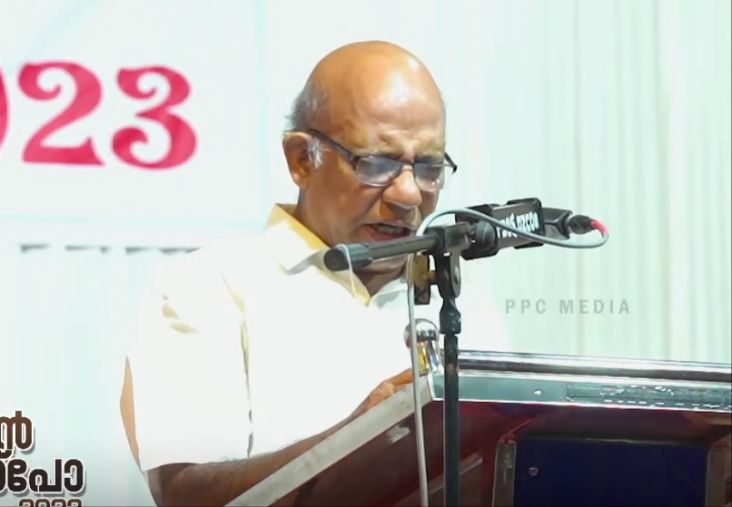

കുന്നംകുളത്തിന്റെ വചനമുത്തുകൾ : റോയേട്ടൻ പ്രത്യാശയുടെ തീരത്ത്. അനുസ്മരണം തയ്യാറാക്കിയത് : ജനറൽ സെക്രട്ടറി

കർത്താവിൽ പ്രസിദ്ധനായ റോയേട്ടൻ പ്രത്യാശയുടെ തീരത്ത്. 1992 എന്റെ കുടുംബം പതിയെ രക്ഷയിലേക്ക് വന്നുകൊണ്ടിരിക്കുന്ന കാലഘട്ടം, ഞാനല്ലാതെ എല്ലാവരും എൻ്റെ കുടുംബത്തിലുള്ളവർ ഞായറാഴ്ച കൂട്ടായ്മക്കായി യൂണിയൻ ഹാളിൽ പൊയ്ക്കൊണ്ടിരിക്കുന്നു. അന്ന് റോയേട്ടൻ ജോലി ചെയ്തിരുന്നത് തൃശൂർ ഭാഗത്താണ്. ഒരു ദിവസം ഞാൻ തൃശ്ശൂരിൽ നിന്ന് വരുമ്പോൾ തൃശ്ശൂർ ശക്തൻ സ്റ്റാൻഡിൽ നിന്ന് ബസ്സ് കയറുമ്പോൾ റോയേട്ടൻ ഉണ്ടായിരുന്നു. പലകാര്യങ്ങളെ കുറിച്ച് ഞങ്ങൾ സംസാരിച്ചുകൊണ്ടിരുന്നു. ആ കൂട്ടത്തിൽ വെള്ളിയാഴ്ച യൂണിയൻ ഹാളിൽ നടക്കുന്ന യൂത്ത് മീറ്റിങ്ങിനെക്കുറിച്ച് സംസാരിക്കുകയും മീറ്റിങ്ങിലേക്ക് വരുവാൻ ക്ഷണിക്കുകയും ചെയ്തു. തുടർന്ന് ഞാൻ വെള്ളിയാഴ്ച ദിവസങ്ങളിൽ മീറ്റിങ്ങിനായി പോയിക്കൊണ്ടിരുന്നു. ശുശ്രൂഷ രംഗത്തെ പല ആത്മീയ മർമ്മങ്ങളും അദ്ദേഹം എനിക്ക് മനസ്സിലാക്കി തന്നു. 2000ൽ ആരംഭിച്ച ബിസിനസ്സ് മിനിസ്ട്രി ബന്ധത്തിലുണ്ടായ ചില അഭിപ്രായ വ്യത്യാസങ്ങൾ മൂലം ഏകദേശം 19 വർഷക്കാലം തമ്മിൽ അകൽച്ച ഉണ്ടായി. 1995 ൽ ജൂലായ് മാസം 29-ാം തിയ്യതി യൂണിയൻ ഹാളിലെ യുവാക്കൻമാർക്ക് ലഭിച്ച പരിശുദ്ധാത്മാവിന്റെ അഭിഷേകം ഹാളിലെ ഒരു സംസാര വിഷയമായിത്തീർന്നു. ഇന്ന് നിത്യതയിൽ വിശ്രമിക്കുന്ന സി ഐ ചാക്കുണ്ണി മാസ്റ്ററും മാർത്തോമ സഭയിലെ ജോസഫ് അച്ഛനും യൂണിയൻ ഹാളിലെ ചെറുപ്പക്കാരായ റോയേട്ടൻ, ജെയിംസേട്ടൻ, ജിം, ഐവാൻ, ഡോ സാംസൺ, തമ്പിയേട്ടൻ എന്നിവർ കൂടി 1997 ജനുവരി 1-ാം തിയ്യതി കുന്ദംകുളത്തെ കിഴക്കെ അങ്ങാടിയുടെയും കുന്നത്തങ്ങാടിയുടെയും കോർണറിൽ വെച്ച് ആരംഭിച്ച പരസ്യവേല കുന്ദംകുളത്തിന്റെ പ്രാന്തപ്രദേശങ്ങളിൽ ഏറെ വർഷക്കാലം നടത്തുന്നതിന് പ്രിയ റോയേട്ടൻ നേതൃത്വം നൽകി. ഞങ്ങൾ തമ്മിൽ 2000ൽ ആശയഭിന്നിപ്പ് മൂലം അകൽച്ചയായത് പിന്നീട് ദൈവനാമത്തിൻ്റെ മഹത്വത്തിന് കാരണമായിത്തീർന്നു. അത് ദൈവീക പദ്ധതി നിറവേറ്റുവാൻ ദൈവം എടുത്ത് ഉപയോഗിച്ചു എന്ന് പറയുന്നതിൽ സന്തോഷമുണ്ട്. 2003 ൽ ആരംഭിച്ച നമ്മുടെ മിഷൻ പ്രവർത്തനം വടക്കേ ഇന്ത്യയിൽ ഒട്ടേറെ സഭകളെ ജനിപ്പിക്കുവാൻ കാരണമായി. ശേഷം 2020 ൽ ക്രമീകരിച്ച മിഷൻ എക്സ്പോയിൽ അദ്ദേഹത്തിന്റെ സാന്നിദ്ധ്യം ഏറെ അനുഗ്രഹമായിരുന്നു. എൻ്റെ ഷോപ്പ് രാത്രി അടച്ച് അയ്യംപറമ്പിൻ്റെ കുന്നിൻമുകളിൽ സഹോദരൻ ജോണും (കുഞ്ഞൻ) ഞാനും റോയേട്ടനും പ്രാർത്ഥിക്കുവാൻ കൂടിയിരുന്നു. അന്ന് റോയേട്ടന്റെ തറവാട് വീടിൻ്റെ മുകൾഭാഗത്തും, എല്ലാ ദിവസവും കാലത്ത് 6 മണിക്ക് യൂണിയൻ ഹാളിലും ഞങ്ങൾ പ്രാർത്ഥിക്കുവാൻ പോയിരുന്നു. റോയേട്ടൻ്റെ വീട്ടിൽ നിന്ന് ഒട്ടേറെ തവണ ഭക്ഷണവും ചായയും കുടിച്ചത് ഞാനോർക്കുന്നു. യൂണിയൻ ഹാളിനെ പുനരുദ്ധരിക്കുവാൻ സഹോദരൻ റോയ് എടുത്ത തീരുമാനവും പങ്കും ശ്രദ്ധേയമാണ്. പല കാര്യങ്ങൾക്കും അദ്ദേഹത്തിന് വ്യക്തമായ നിലപാട് ഉണ്ടായിരുന്നു. താനുമായി കണ്ടുമുട്ടുന്ന ആളുകളെ ദൈവീക ശുശ്രൂഷക്ക് അടുപ്പിക്കുവാൻ താൻ ആവോളം ശ്രമിച്ച വ്യക്തിയാണ്. ആദിമകാലങ്ങളിൽ സി ഐ ചാക്കുണ്ണിമാസ്റ്ററുടെ മകൻ ഗീവർ ഉപയോഗിച്ച ആവന്തി എന്ന മോപ്പെഡ് ആണ് അദ്ദേഹം ഉപയോഗിച്ചിരുന്നത്. ചാക്കുണ്ണി മാസ്റ്ററുടെ വീട്ടിൽ ക്രമീകരിച്ച ബൈബിൾ ക്ലാസ്സിന്റെയും യൂണിയൻ ഹാളിലെ കൂട്ടായ്മക്ക് ശേഷവും നടത്തിവന്ന ഭവന സന്ദർശനവും ഏറെ എന്നെ സ്വാധീനിച്ചിട്ടുണ്ട്. വടക്കേ ഇന്ത്യയിലെ ശുശ്രൂഷയുടെ ഭാഗമായി ദശാംശപെട്ടിയിലൂടെ അദ്ദേഹം ഗ്രാമങ്ങളെ സപ്പോർട്ട് ചെയ്തിരുന്നു. ആലുവ രാജഗിരി ഹോസ് പിറ്റലിൽ രോഗം മൂർച്ഛിച്ച് കിടക്കുമ്പോൾ ഞാൻ പോയി രുന്നു എങ്കിലും കാണാൻ സാധിച്ചില്ല പ്രാർത്ഥിച്ച് പോരുകയാണ് ചെയ്തത്. 2025 ലും 2026ലും മിഷൻ എക്സ്പോയ്ക്ക് പ്രാർത്ഥിക്കുവാൻ ക്ഷണിച്ചു. എങ്കിലും ശാരീരികമായ ക്ഷീണം ഉള്ളതുകൊണ്ട് വരുന്നില്ല എന്ന് എന്നെ അറിയിച്ചു. ഒട്ടേറെ ഓർമ്മകൾ ഇനിയും മനസ്സിൽ വരുന്നുണ്ട് എങ്കിലും സ്ഥലപരിമിതിമൂലം ഇവിടെ നിർത്തുകയാണ്. തന്റെ വേർപാട് വിശ്വാസസമൂഹത്തിന് തീരാനഷ്ടമാണ് കർത്താവിന്റെ രണ്ടാമത്തെ മടങ്ങിവരവിങ്കൽ ആ ഭയൂല തീരത്ത് നമ്മൾ കണ്ടുമുട്ടും എന്ന പ്രതാശയോടെ..... NB: തന്റെ നല്ല ആരോഗ്യസമയത്ത് ആര് എവിടെ വിളിച്ചാലും സഭാവ്യത്യാസം കൂടാതെ സ്വന്തം പോക്കറ്റിൽ നിന്ന് പണമെടുത്ത് പോയി സുവിശേഷം പ്രസംഗിച്ചിരുന്ന വ്യക്തിത്വത്തിൻ്റെ ഉടമയാണ് റോയേട്ടൻ. ആരെയെങ്കിലും ദൈവസ്നേഹം നിർബന്ധിച്ച് സാമ്പത്തിക സഹായം കൊടുത്താൽ അതിന് സംഘത്തിന്റെ രശീതിയും ഒപ്പം കൊടുക്കും.